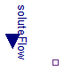

Extends from Modelica.Icons.SourcesPackage (Icon for packages containing sources).
| Name | Description |
|---|---|
| UnlimitedSolutePump | Molar pump of solute to system |
| UnlimitedSolutionStorage | Constant concentration source |
| UnlimitedGasStorage | Constant ideal gas source |
| UnlimitedSolutePumpOut | Molar pump of solute out of system |
Molar pump of solute to system

Extends from Interfaces.ConditionalSoluteFlow (Input of solute molar flow vs. parametric solute molar flow).
| Type | Name | Default | Description |
|---|---|---|---|
| MolarFlowRate | SoluteFlow | 0 | Volumetric flow of solute if useSoluteFlowInput=false [mol/s] |
| External inputs/outputs | |||
| Boolean | useSoluteFlowInput | false | =true, if solute flow input is used instead of parameter SoluteFlow |
| Type | Name | Description |
|---|---|---|
| input MolarFlowRateInput | soluteFlow | [mol/s] |
| ChemicalPort_b | q_out | Outflow |
Constant concentration source
| Type | Name | Default | Description |
|---|---|---|---|
| Concentration | Conc | 0 | Fixed concentration if useConcentrationInput=false [mol/m3] |
| External inputs/outputs | |||
| Boolean | useConcentrationInput | false | =true, if fixed concentration is from input instead of parameter |
| Equilibrium | |||
| Simulation | |||
| Boolean | isIsolatedInSteadyState | true | =true, if there is no flow at port in steady state |
| SimulationType | Simulation | Types.SimulationType.NormalI... | If in equilibrium, then zero-flow equation is added. |
| Type | Name | Description |
|---|---|---|
| ChemicalPort_b | q_out | constant concentration with any possible flow |
| input ConcentrationInput | concentration | [mol/m3] |
Constant ideal gas source
Extends from Interfaces.ConditionalHeatPort (Partial model to include a conditional HeatPort in order to describe the power loss via a thermal network).
| Type | Name | Default | Description |
|---|---|---|---|
| Pressure | PartialPressure | 0 | Fixed partial pressure if usePartialPressureInput=false [Pa] |
| External inputs/outputs | |||
| Boolean | useHeatPort | false | =true, if HeatPort is enabled |
| Boolean | usePartialPressureInput | false | =true, if fixed partial pressure is from input instead of parameter |
| Temperature dependence | |||
| Temperature | T | 310.15 | Fixed device temperature if useHeatPort = false [K] |
| Equilibrium | |||
| Simulation | |||
| Boolean | isIsolatedInSteadyState | true | =true, if there is no flow at port in steady state |
| SimulationType | Simulation | Types.SimulationType.NormalI... | If in equilibrium, then zero-flow equation is added. |
| Type | Name | Description |
|---|---|---|
| HeatPort_a | heatPort | |
| ChemicalPort_b | q_out | constant gas concentration with any possible flow |
| input PressureInput | partialPressure | Partial pressure of Gas = air pressure * gas fraction [Pa] |
Molar pump of solute out of system
Extends from Interfaces.ConditionalSoluteFlow (Input of solute molar flow vs. parametric solute molar flow).
| Type | Name | Default | Description |
|---|---|---|---|
| MolarFlowRate | SoluteFlow | 0 | Volumetric flow of solute if useSoluteFlowInput=false [mol/s] |
| External inputs/outputs | |||
| Boolean | useSoluteFlowInput | false | =true, if solute flow input is used instead of parameter SoluteFlow |
| Type | Name | Description |
|---|---|---|
| input MolarFlowRateInput | soluteFlow | [mol/s] |
| ChemicalPort_a | q_in | Inflow |